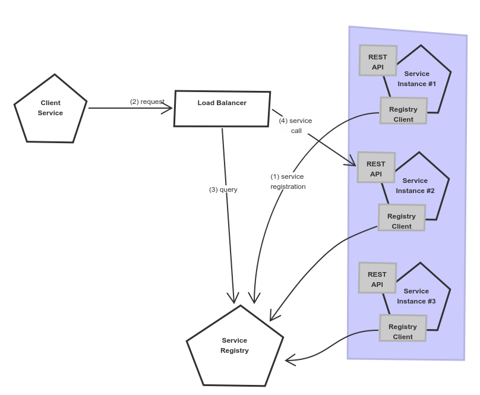
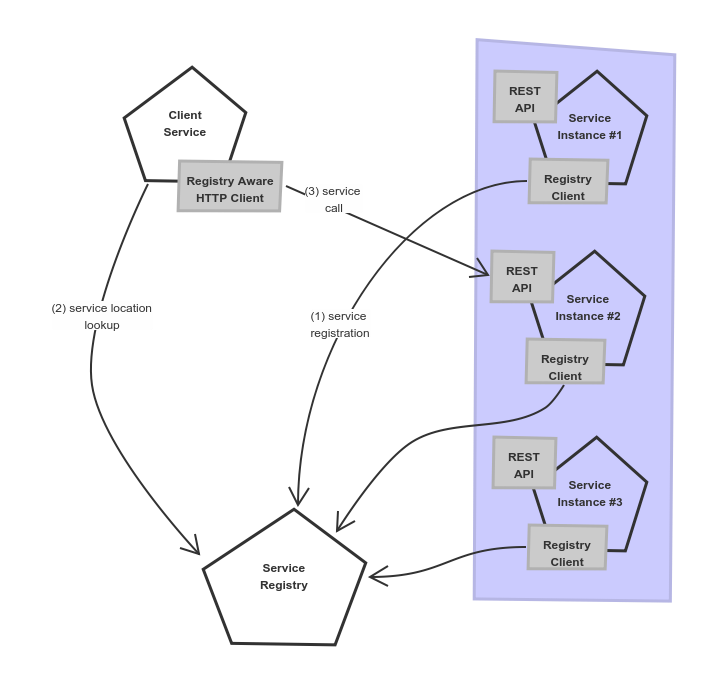
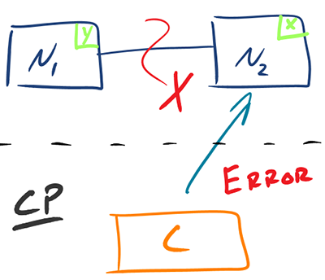
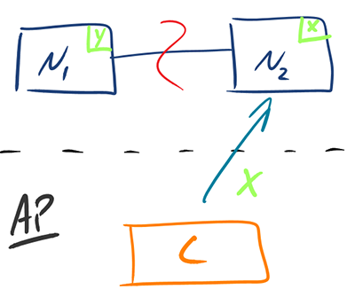

// Exibit A +-------------+ | | | Resources | | service | | | +-------------+ //
Microservices, microservices everywhere
The 5 Why’s of microservices
Microservices? Why?
Microservices? Why?
Microservices? Oh, why?
Microservices? Oh dear God, why?
Microservices? Damn it! Why?
Software engineer | ||
|---|---|---|
Chief Mob Officer | ||
Jakub Marchwicki <@kubem> | ||
Microservices, how it all started?
All names, characters, and incidents portrayed in this story are fictitious. No identification with actual persons (living or deceased), places, and buildings is intended or should be inferred.
On day one there was a lonely architect sitting
in a tower made of ivory
full of uncertainty and sadness
and the architect said
let there be µservices
let there be small modules
which have only a single reason to change
let the modules communicate
over well defined interfaces
let the output of one module
becomes the input of the other
and the architect saw it was good
and the architect has give it name
the architect called it
a distributed system
and developers seen it
and it was good
and there was evening, and there was morning
(Genesis. 1, 1-25)
Microservices
the microservice architectural style is an approach to developing a single application as a suite of small services, each running in its own process and communicating with lightweight mechanisms, often an HTTP resource API
— James Lewis and Martin Fowler
µservices
Small business domain
Independent; independently deployed
Running in it’s own process
Managing it’s data
Loosely integrated using common communication protocols
Monolith are bad - mmkey??
Microservices are good
Clean code
Single responsibility modules potentialy
Faster than monoliths faster to deploy, works faster
Easier to manage independent teams, independent codebases
Easier to scale at this point we should at least mention Docker
Docker, Docker, Docker, Docker
Microservices are good - mmmkey?
(…) collection of task-oriented or dedicated systems that pool their resources and capabilities together to create a new, more complex system which offers more functionality and performance than simply the sum of the constituent systems
System of systems
(…) collection of task-oriented or dedicated systems that pool their resources and capabilities together to create a new, more complex system which offers more functionality and performance than simply the sum of the constituent systems
So what can possibly go wrong?
// Exibit A
+------------------+
+-------------+ | |
| | | Access control |
| Resources | | |
| service | +------------------+
| |
+-------------+
//// Exibit A
+------------------+
+-------------+ | |
| | | Access control |
| Resources | | |
| service | +------------------+
| |
+-------------+
+----------------+
| |
| Users |
| repository |
| |
+----------------+
//// Exibit A
+------------------+
+-------------+ | |
| | | Access control |
| Resources | | |
| service | +------------------+
| |
+-+-----------+
^
|
| +----------------+
| | |
| | Users |
| | repository |
| | |
| +----------------+
(1)
+
//// Exibit A
+------------------+
+-------------+ | |
| | | Access control |
| Resources | | |
| service | +------------------+
| |
+-+-------+---+
^ |
| |
| | +----------------+
| | | |
| | | Users |
| | (2) | repository |
| +-----------> | |
| +----------------+
(1)
+
//// Exibit A
+------------------+
+-------------+ | |
| | | Access control |
| Resources | | |
| service | +------------------+
| +<---------+
+-+-------+---+ (3) |
^ | |
| | |
| | +----------------+
| | | |
| | | Users |
| | (2) | repository |
| +-----------> | |
| +----------------+
(1)
+
//// Exibit A
+------------------+
+-------------+ | |
| | (4) | Access control |
| Resources +------------>+ |
| service | +------------------+
| +<---------+
+-+-------+---+ (3) |
^ | |
| | |
| | +----------------+
| | | |
| | | Users |
| | (2) | repository |
| +-----------> | |
| +----------------+
(1)
+
//// Exibit A
+------------------+
+-------------+ | |
| | (4) | Access control |
| Resources +------------>+ |
| service | +------------------+
| +<---------+
+-+-------+---+ (3) |
^ | | |
| | | |
| | | +----------------+
| | | | |
| | | | Users |
| | | (2) | repository |
| | +-----------> | |
| | +----------------+
(1) |
+ |
(5)
v
//Microservices journey
Microservices journey
A Piecemeal Growth is the process of building something a step at a time. Each step consists of evaluating the current system, deciding what should be done next (what should be fixed or improved) and then adding a piece or making a change.
— Christopher Alexander
Exibit B
a scoring engine -- 2009
+-----------------------------------------------+
| |
| +-----------------------------------+ |
| | | |
| | Boundary: SOAP | |
| | | |
| +-----------------------------------+ |
| | | |
| | EJB | |
| | | |
| +-----------------------------------+ |
| |
| |
| +--------+ +-------+ +----------+ |
| | | | | | | |
| | JAX-WS | | JPA | | DROOLS | |
| | | | | | | |
| +--------+ +-------+ +----------+ |
| |
| |
| JBoss 4.2.x |
| |
+-----------------------------------------------+Business value?
Webservices are so hard to sell.
Can you visualize this? A UI?
+-----------------------------------------------+
| |
| +--------------------+--------------+ |
| | | | |
| | Boundary: SOAP | JSF | |
| | | | |
| +--------------------+--------------+ |
| | | |
| | EJB | |
| | | |
| +-----------------------------------+ |
| |
| |
| +--------+ +-------+ +----------+ |
| | | | | | | |
| | JAX-WS | | JPA | | DROOLS | |
| | | | | | | |
| +--------+ +-------+ +----------+ |
| |
| |
| JBoss 4.2.x |
| |
+-----------------------------------------------+ +-----------------------------------------------+
| |
| +-----------------+-----------------+ | +---------------+
| | | | | | |
| | Boundary: SOAP | REST endpoint | <--------------+ | Dedicated |
| | | | | | mobile |
| +-----------------+-----------------+ | | Single Page |
| | | | | Application |
| | EJB | | | |
| | | | | |
| +-----------------------------------+ | +---------------+
| |
| |
| +--------+ +-------+ +----------+ |
| | | | | | | |
| | JAX+WS | | JPA | | DROOLS | |
| | | | | | | |
| +--------+ +-------+ +----------+ |
| |
| |
| JBoss 4.2.x |
| |
+-----------------------------------------------+Note to self
Keep separate things separately
Microservices checklist
Small business domain
Independent; independently deployed
Running in it’s own process
Managing it’s data
Loosely integrated using common communication protocols
Microservices checklist
Small business domain
Independent; independently deployed
Running in it’s own process
Managing it’s data
Loosely integrated using common communication protocols
Retrospective
We define libraries as components that are linked into a program and called using in-memory calls, while services are out-of-process components who communicate with remote procedure calls
— James Lewis
Consumer Driven Contracts
(…) drives the development of the Provider from its Consumers point of view, which means consumer describes what and how it wants to receive the information (in a form of a contract) and then provider implements the service following the given contract.
Exibit C
huge image repository -- 2007
+--------------------------------------+
| |
| web / controllers |
| |
+-----------+--------------------------+
|
| (1) ^
| |
v | (5)
|
+-------------------------------------+
| |
| application logic |
| |
+--+-------------------------+--------+
| |
| (2) ^ | (4)
| | |
v | (3) v
|
+----------+--+ +------------------+
| | | |
| MySQL | | filesystem |
| | | |
+-------------+ +------------------+Business value?
The search function is unbelievably slow
can’t work with it
Note to self
There is no such thing as legacy — what can’t be killed, becomes business as usual
Proxy
+-----+ +------------------+
| | /* | |
+----------------+--------------------------> | |
| | | | The Old stuff |
| | | | +--------+
| | | | | |
| | | +------------------+ |
| | | |
| | | | Elastic Search
| | | | data push
| | | |
| | | |
| | | +------------------+ |
| | | /search | | |
| | +--------------------------> | | <------+
| | | Elastic Search |
| | | index |
| | | |
+-----+ +------------------+Microservices checklist
Small business domain
Independent; independently deployed
Running in it’s own process
Managing it’s data
Loosely integrated using common communication protocols
Retrospective
(…) as every parent of a small child knows, converting a large object into small fragments is considerably easier than the reverse process.
Andrew Tanenbaum
— Distributed Systems (2007) - Principles & Paradigms
— Distributed Systems (2007) - Principles & Paradigms
Write through
update query +--------------------------+ +----------------------------------+
-------------------->| update denormalized view |-------->| update persistent (master) store |
+--------------------------+ +----------------------------------+
Write behind
update query +----------------------------------+ +---------------------------+
---------------->| update persistent (master) store |----------->| update denormalized views |
+----------------------------------+ +---------------------------+
Read through
read query +--------------------------+ +---------------------------+
<---------------------| update denormalized view |<--------------| read persistent store |
+--------------------------+ +---------------------------+Lessons learned
from all these projects
Start small
monoliths are
slightly less
distributed systems
Don’t diagram - trace and visualize
let the application tell you
where it spends time
Automate, automate, automate
event a single JAR
cannot be deployed manually
But we’ve already started!
what do our services do when nobody watches?
Distributed computing
A distributed system is one in which the failure of a computer you didn’t even know existed can render your own computer unusable.
Leslie Lamport
— Microsoft mailing list 1987
— Microsoft mailing list 1987
Distributed computing

Fallacies of distributed computing
(is) a set of assertions made by L Peter Deutsch and others at Sun Microsystems describing false assumptions that programmers new to distributed applications invariably make
— 1994 - 1998
The network is reliable.
Latency is zero.
Bandwidth is infinite.
The network is secure.
Topology doesn’t change.
There is one administrator.
Transport cost is zero.
The network is homogeneous.
In other words
network
sucks
Load balance
all the things
… Before Choosing a Load Balancer
AWS Elastic Load Balancer
nginx
Ribbon + Eureka
Ribbon + Consul
Kubernetes
Load balancing

Server-side Load balancing
Client-side load balancing

- Client-Side Service Discovery / Load balancing
Service registers itself in a central repository. The repository also provides an information about other services availability. Other services request the information and autonomously decide which instances are called.
- Server-Side Service Discovery / Load balancing
Service registers itself in a central repository. Other services access the repository (single address), which internally forwards the request to an available instance.
… Before Choosing a Load Balancer
Brewer’s theorem (CAP theorem)
(…) it is impossible for a distributed computer system to simultaneously provide all three of the following guarantees: Consistency, Availability and Partition tolerance.
— 1998
- Consistency
Every read receives the most recent write or an error
- Availability
Every request receives a (non-error) response – without the guarantee that it contains the most recent write
- Partition tolerance
The system continues to operate despite an arbitrary number of messages being dropped (or delayed) by the network between nodes
CAP + Network Fallacies
either Consistent or Available when Partitioned
Consistency vs Availability
|  |
Consistency vs Availability
|  |
… Before Choosing a Load Balancer
CAP + Network latencies
in the absence of partitions, one has to choose between latency and consistency
PACELC theorem
Ignoring the consistency/latency tradeoff of replicated systems is a major oversight [in CAP], as it is present at all times during system operation, whereas CAP is only relevant in the arguably rare case of a network partition.
— Daniel J. Abadi 2012